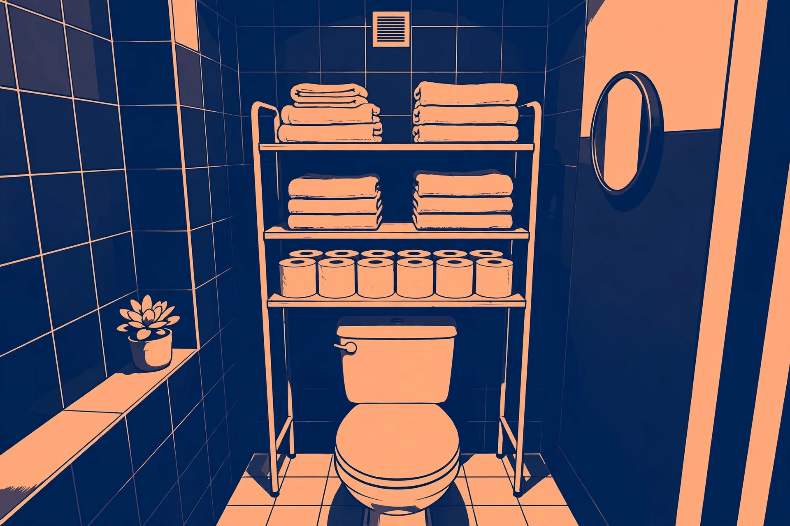

Bathroom shelving over the toilet: measuring clearance before you buy

The wall over a toilet is usually the largest unused surface in a small bathroom, and the furniture sold to fill it — the over-toilet spacesaver — looks deceptively standard. It is not. Spacesavers differ in width, depth, total height, and, most importantly, in the clearance between the floor and the lowest shelf or crossbar, which is the measurement that decides whether the unit fits over your particular toilet at all. Returns in this category are mostly measuring failures, not quality failures. This guide verifies the fit numbers against real manufacturer dimensions, compares the three ways to fill the space, and gives the measuring procedure to run before ordering anything.
The space over the toilet, in real numbers
Start with the guidance that buying guides repeat, then check it against product dimensions. A widely cited over-toilet buying guide puts it this way: the unit's bottom clearance should be at least 32 to 36 inches from the floor to the lowest shelf; standard toilets measure about 28 to 30 inches tall, so 32 inches of clearance works for most; comfort-height toilets need 34 to 36 inches of clearance; and total cabinet height usually runs 64 to 71 inches, which fits below an 8-foot ceiling.
Now the manufacturer side. Zenna Home's Drop Door Spacesaver (model 9401W, made by Zenith Products) is listed at 23 inches wide, 7.38 inches deep, and 64.5 inches high, with a ground-to-item distance of 31.75 inches — just under the 32-inch guidance figure. That gap matters: against a taller toilet, a unit at 31.75 inches of clearance can foul the tank lid or the flush handle even though the product is marketed as fitting over most standard toilets. Zenna's open metal spacesaver (model 2523NN) is a different shape again: 23.25 inches wide, 10.25 inches deep, and 64.7 inches high, with three steel shelves. Two products from the same maker, sold for the same spot, differ by nearly 3 inches of depth and a different clearance profile. There is no standard spacesaver — there is only the dimension sheet of the specific model.
Depth deserves the same care. A 7.38-inch-deep cabinet holds folded towels and spare rolls comfortably but not large bottles stood upright in a row; a 10.25-inch-deep open rack swallows more but projects further into a small room, closer to the head of anyone standing at the sink. Neither is wrong. They are different rooms' answers.
Three ways to fill it, compared
| Option | How it installs | Typical verified size | Best for | Watch out for |
|---|---|---|---|---|
| Freestanding spacesaver (framed legs around the tank) | Assembled in place over the toilet; no drilling in most designs | Zenna 9401W: 23 x 7.38 x 64.5 in., 31.75 in. ground clearance | Renters; the most storage per dollar; closed-door versions hide clutter | Clearance vs. tank height; wobble if not levelled and secured |
| Wall-mounted shelves or cabinet | Screwed to studs or anchors above the tank | Sized to the wall, not the toilet | No floor contact; keeps the floor clear for cleaning; works with any toilet height | Drilling — including into tile; load limited by anchors; not renter-friendly |
| Freestanding corner or trolley unit beside the toilet | Stands on the floor next to the fixture; no fitting over anything | IKEA RAGRUND trolley: 42 x 33 x 76 cm (about 16.5 x 13 x 30 in.) | Bathrooms where the over-toilet spot is blocked by a window, cabinet, or plumbing | Uses floor space; smaller capacity; must suit a humid room |
The freestanding spacesaver is the default for a reason: it needs no wall commitment and adds two or three shelves where there were none. The wall-mounted route is the better answer when the toilet is tall, the tank is an unusual shape, or the floor around the toilet is tight, because the shelves can start at whatever height clears the tank by a comfortable margin. The corner or trolley route is the fallback that always fits, at the price of floor area.
Measure your toilet before you order: a numbered procedure
- Measure the toilet's total height from the floor to the top of the tank lid, and write it down — do not estimate from the toilet's style name.
- Measure the width across the widest part of the tank, and the depth from the wall to the front of the tank, including any space taken by the water supply line and shutoff valve behind or beside the bowl.
- Check the wall above: look for a window, an existing cabinet, a towel bar, or a flush plate that the unit's back or top would collide with, and measure the free height to the ceiling or the obstruction.
- From the product's dimension sheet — not the listing headline — note the unit's width, depth, total height, and, critically, its ground-to-lowest-shelf or ground-to-item distance.
- Compare: the unit's inside width must clear the tank width with room to assemble it in place; its ground clearance must exceed your tank-top height with margin for the lid to be lifted off for servicing; its total height must fit under your ceiling or obstruction measurement.
- Check the depth against the room: stand where a user stands, and confirm the unit's depth will not put a shelf edge at head height in the walkway.
- Plan the securing step before the unit arrives: level floor contact, and, where the model provides for it, a wall strap or bracket so the unit cannot tip forward when a top shelf is loaded.
What success looks like: every comparison in step 5 passes on paper with margin to spare — clearance above tank height, lid removable without moving the unit, supply valve reachable by hand, and the lowest shelf high enough that nothing stored on it touches the tank. If any comparison is within a quarter inch, choose a different model rather than hoping.
Materials in a humid room
A bathroom shelf lives in steam. Material choice is therefore not a style preference; it is the lifespan decision. IKEA's RAGRUND bathroom series is the clearest manufacturer statement of the principle: the units are bamboo finished with a clear acrylic lacquer, and IKEA describes bamboo as a natural, hardwearing material suited to humid spaces, with care limited to wiping clean with a damp cloth. Hunker's coverage of the RAGRUND shelf unit — reported at $60, standing 41 inches high and just under 15 inches wide with four lacquered shelves — makes the comparison explicit: bamboo holds up in damp conditions where similarly priced medium-density fibreboard can eventually swell. Treat that as the general rule for this room: lacquered bamboo, powder- or epoxy-coated steel, and solid wood with a sealed finish tolerate bathroom humidity; raw or lightly finished engineered board at the bottom price tier is the material most likely to bubble and swell at the edges within a few years.
Open versus closed storage interacts with humidity too. Closed cabinets keep spare towels drier and hide the visual clutter, but they also trap moist air around their contents if the bathroom ventilates poorly; open shelves dry quickly and show everything. In a bathroom with a working fan and a door that opens daily, either works. In a windowless ensuite that steams up every morning, open shelving for towels and a closed cabinet only for items that stay dry-sealed is the safer mix.
Stability and safety over porcelain
An over-toilet unit is tall, narrow, and top-loaded by design — the profile the U.S. Consumer Product Safety Commission's tip-over guidance is written about. The CPSC advises that furniture be stable on its own and, for added security, anchored to the wall or floor, and that items likely to attract children be kept off furniture they might climb. Applied here: level the unit so all feet bear evenly, use the wall attachment the manufacturer provides where one is included, load the heaviest items — spare bottles, the bulk pack of toilet paper — on the lowest shelf rather than the top, and never treat the unit as a grab bar or a step. If the model provides no way to secure it and it rocks on your floor, that is a reason to return it, not to wedge it and hope.
FAQ
How much clearance does an over-toilet unit need? Commonly cited guidance is 32 to 36 inches from the floor to the lowest shelf, with comfort-height toilets at the top of that range. Verify against the specific model: a mainstream unit, the Zenna 9401W, lists 31.75 inches, which can be tight over a tall tank.
Can renters use over-toilet shelving? Yes — freestanding spacesavers assemble around the toilet without drilling, and a corner or trolley unit needs no installation at all. Wall-mounted shelves are the only option in this guide that requires holes.
What depth is right? Around 7 to 8 inches suits towels and spare rolls in a closed cabinet; around 10 inches suits open storage of bottles and baskets but projects further into the room. Choose from the model's dimension sheet, and check it against your headroom at the sink.
The short version
Measure the toilet — height, width, and the valve behind it — before falling for any listing photo. Verify the model's ground clearance, depth, and total height against those numbers, pick a material that tolerates steam, load the bottom shelf heaviest, and secure the unit so it cannot tip. Do those five things and the dead space over the tank becomes the hardest-working storage in the bathroom.
Related: choosing and placing floating shelves that look good and hold up →